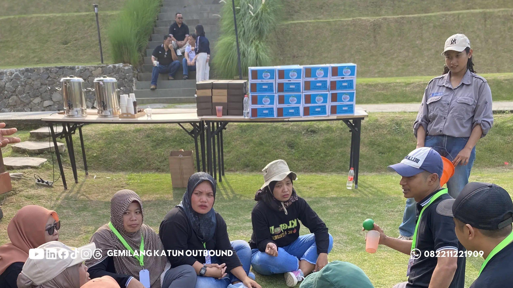

1. Kenapa Tim Butuh Permainan Outbound yang Bervariasi?
Permainan outbound seru dan kreatif dirancang untuk membangun kerja sama, komunikasi aktif, dan penyegaran suasana kerja tanpa membuat peserta merasa terbebani. Pilihan permainan seperti Estafet Kreatif, Human Knot, Treasure Hunt, Blind Challenge, dan simulasi Problem Solving membantu karyawan berinteraksi secara cair, memahami peran rekan satu tim, serta meningkatkan koordinasi kelompok di lingkungan kerja.
Rutinitas kerja harian yang padat sering kali menimbulkan kejenuhan dan menciptakan sekat komunikasi antarbagian di kantor. Ketika perusahaan menyelenggarakan kegiatan rekreasi luar ruang, memilih permainan yang monoton atau sudah terlalu sering dimainkan dapat menurunkan antusiasme peserta sejak menit pertama.
Sebaliknya, permainan yang dirancang dengan variasi tantangan yang seimbang antara logika, gerak fisik ringan, dan interaksi verbal mampu memicu tawa spontan sekaligus menumbuhkan rasa saling percaya. Melalui dinamika permainan luar ruang yang terencana, setiap peserta diajak keluar dari zona nyaman formal menuju suasana keakraban yang hangat.

Kenapa Team Building Kantor Sering Gagal? Ini 3 Kesalahan HRD
Ketahui kesalahan umum dalam perencanaan team building dan cara merancang kegiatan yang benar-benar berdampak.
2. Kriteria Game Outbound yang Efektif untuk Karyawan
Tidak semua permainan luar ruang cocok untuk diterapkan pada kelompok karyawan perusahaan. Game master dan panitia acara perlu memastikan bahwa aktivitas yang dipilih memenuhi parameter berikut:
- Inklusif dan Ramah Usia: Dapat diikuti oleh seluruh staf tanpa membedakan latar belakang fisik atau kelompok usia.
- Menekankan Kerja Sama: Kemenangan hanya bisa diraih jika seluruh anggota tim saling berkoordinasi dan menyumbangkan peran.
- Mengandung Pembelajaran Spontan: Memberikan wawasan berharga tentang pola komunikasi, kepemimpinan, atau pemecahan masalah tanpa terkesan menggurui.
- Aman dan Terkontrol: Menggunakan perlengkapan yang layak pakai dengan risiko cedera yang sangat minim.
3. 5 Permainan Outbound Kreatif & Kolaboratif
Berikut adalah 5 simulasi permainan luar ruang yang terbukti efektif meningkatkan kebersamaan tim kerja:
1. Estafet Kreatif Berantai
Cara Bermain: Setiap anggota tim harus memindahkan objek (seperti bola pingpong atau air) menggunakan media pipa terbelah atau tali tanpa boleh tersentuh tangan secara langsung dari garis start menuju wadah penampungan akhir.
- Tujuan: Melatih konsentrasi, sinkronisasi ritme kerja, dan kepekaan dalam menyambung tugas antarrekan.
- Jumlah Peserta: 6–10 orang per kelompok.
- Kemampuan yang Dilatih: Kesabaran, konsistensi ritme gerak, dan komunikasi verbal yang jelas.
- Tingkat Kesulitan: Rendah ke Sedang.
- Aspek Keselamatan: Pastikan area lintasan bersih dari batu tajam atau permukaan licin.
2. Human Knot (Ikatan Tali Manusia)
Cara Bermain: Peserta berdiri melingkar rapat, kemudian mengulurkan tangan untuk memegang tangan dua orang yang berbeda di seberang mereka secara acak. Tantangannya adalah mengurai jalinan tangan yang saling bersilangan menjadi lingkaran rapi tanpa melepaskan genggaman sama sekali.
- Tujuan: Mendorong kepemimpinan situasional, empati fisik, dan kerja sama dalam menyelesaikan situasi rumit.
- Jumlah Peserta: 8–12 orang per kelompok.
- Kemampuan yang Dilatih: Pendengaran aktif, kepemimpinan bersama, dan negosiasi gerak kelompok.
- Tingkat Kesulitan: Sedang.
- Aspek Keselamatan: Hindari gerakan memutar pergelangan tangan secara paksa atau gerakan tiba-tiba.

Permainan kolaboratif menuntut setiap anggota tim saling mendengarkan dan menyepakati strategi bersama.
3. Treasure Hunt Berbasis Petunjuk Logika
Cara Bermain: Tim menerima peta area dan teka-teki logika pertama yang mengarahkan mereka ke serangkaian pos tersembunyi. Di setiap pos, tim harus menyelesaikan misi mini untuk mendapatkan potongan petunjuk rahasia hingga pos akhir.
- Tujuan: Mengasah pemikiran analitis, pembagian peran strategis, dan manajemen waktu regu.
- Jumlah Peserta: 5–8 orang per kelompok.
- Kemampuan yang Dilatih: Analisis petunjuk, navigasi ruang, dan sinergi pembagian tugas.
- Tingkat Kesulitan: Sedang hingga Tinggi.
- Aspek Keselamatan: Tentukan batas wilayah perburuan secara jelas agar tidak ada peserta yang terpisah dari zona aman.
4. Blind Challenge (Tantangan Kepercayaan)
Cara Bermain: Satu anggota tim ditutup matanya untuk melintasi jalur rintangan sederhana, sementara rekan setimnya bertindak sebagai pemandu arah hanya melalui instruksi suara dari batas luar lintasan.
- Tujuan: Membangun rasa percaya antaranggota tim dan melatih ketepatan dalam memberikan instruksi komunikasi.
- Jumlah Peserta: 4–6 orang per kelompok.
- Kemampuan yang Dilatih: Ketepatan instruksi, pendengaran selektif, dan rasa saling percaya (*trust*).
- Tingkat Kesulitan: Sedang.
- Aspek Keselamatan: Fasilitator lapangan bersiap di dekat peserta untuk mengantisipasi potensi tersandung.
5. Problem Solving Konstruksi Terbatas
Cara Bermain: Tim diberikan bahan-bahan terbatas (seperti papan kayu, tali, atau balok geometri) untuk menyusun konstruksi tertentu yang mampu menahan beban atau menyelesaikan pola geometri kompleks dalam batasan waktu singkat.
- Tujuan: Menguji kreativitas kelompok dalam mengoptimalkan sumber daya terbatas di bawah tekanan waktu.
- Jumlah Peserta: 8–15 orang per kelompok.
- Kemampuan yang Dilatih: Pengambilan keputusan, inovasi tim, dan pembagian tugas yang efektif.
- Tingkat Kesulitan: Sedang hingga Tinggi.
- Aspek Keselamatan: Bahan perlengkapan dalam kondisi layak pakai dan tidak memiliki sudut runcing yang membahayakan.
4. Cara Memilih Permainan Berdasarkan Kondisi Tim
Setiap kelompok kerja memiliki dinamika dan kebutuhan yang berbeda. Agar kegiatan memberikan manfaat optimal, pemilihan permainan sebaiknya disesuaikan dengan karakteristik peserta:
- Tim Baru Terbentuk: Pilih permainan ringan seperti Estafet Kreatif untuk mencairkan rasa canggung dan mengenalkan pola interaksi awal.
- Tim Berskala Besar: Gunakan format Treasure Hunt atau kompetisi massal yang memungkinkan semua peserta bergerak serentak tanpa antrean panjang.
- Tim Lintas Divisi: Terapkan permainan yang menuntut koordinasi intensif seperti Human Knot atau Blind Challenge untuk meruntuhkan sekat antarbagian.
- Tim yang Membutuhkan Peningkatan Problem Solving: Integrasikan simulasi logika terstruktur yang menantang pemikiran strategis bersama dalam program team building perusahaan.

Rekomendasi Vendor Outbound Perusahaan Profesional di Batu & Malang
Pelajari standar transparansi penawaran dan kapabilitas fasilitasi yang wajib diperhatikan saat memilih vendor kegiatan.
5. Checklist Perlengkapan & Keamanan Fun Games
Sebelum memulai sesi simulasi di lapangan, pastikan checklist persiapan berikut telah terpenuhi:
- Memeriksa permukaan lapangan rumput atau area bermain bebas dari pecahan kaca, lubang tersembunyi, atau duri tanaman.
- Menyediakan pasokan air mineral yang cukup untuk mencegah dehidrasi peserta selama beraktivitas di bawah sinar matahari.
- Menyiapkan kotak P3K lengkap dengan obat antiseptik, perban, minyak angin, dan kompres dingin di pos utama.
- Menyampaikan *safety briefing* singkat mengenai batasan fisik yang diperbolehkan sebelum instruksi permainan dimulai.

Paket Outbound Fun Games & Gathering Perusahaan
Pilihan paket lengkap kegiatan luar ruang ceria dengan fasilitator berpengalaman dan peralatan standar keselamatan.
6. Matriks Perbandingan 5 Permainan Outbound
Tabel berikut merangkum fokus pembelajaran, tingkat kesulitan, dan estimasi waktu dari masing-masing permainan:
| Nama Permainan | Fokus Pembelajaran | Tingkat Kesulitan | Estimasi Waktu |
|---|---|---|---|
| Estafet Kreatif | Koordinasi & Kecepatan Komunikasi | Rendah - Sedang | 15 - 20 Menit |
| Human Knot | Kepemimpinan & Pemecahan Masalah Bersama | Sedang | 15 - 25 Menit |
| Treasure Hunt | Strategi Regu & Manajemen Waktu | Sedang - Tinggi | 45 - 60 Menit |
| Blind Challenge | Membangun Rasa Percaya (Trust Building) | Sedang | 20 - 30 Menit |
| Problem Solving | Kreativitas & Pengambilan Keputusan | Sedang - Tinggi | 30 - 45 Menit |
Rancang Program Fun Games Outbound Terbaik untuk Tim Anda
Konsultasikan kebutuhan kegiatan outbound perusahaan Anda bersama Vendor Outbound melalui WhatsApp +62 82211221909. Sampaikan jumlah peserta, tujuan kegiatan, dan konsep acara yang diinginkan. Kami siap mengirimkan proposal penawaran, rundown acara, dan estimasi biaya dalam 1x24 jam.
Hubungi Kami via WhatsAppKesimpulan
Poin Kunci Memaksimalkan Fun Games Karyawan
Permainan outbound yang dirancang secara tepat bukan sekadar sarana bersenang-senang, melainkan investasi penting untuk mempererat kebersamaan dan membangun budaya kerja kolaboratif.
- Pilih jenis permainan yang selaras dengan karakter peserta dan sasaran pencairan suasana yang ingin dicapai.
- Pastikan setiap simulasi dipandu oleh fasilitator yang mampu membangun antusiasme sekaligus menjaga alur keselamatan.
- Kombinasikan fun games dengan program rekreasi lainnya untuk menghadirkan pengalaman gathering kantor yang berkesan.
Pertanyaan yang Sering Diajukan (FAQ)

Arby Ardiansyah
Praktisi pengembangan SDM dan perancang program experiential learning dengan pengalaman lebih dari 8 tahun memfasilitasi ratusan kegiatan outbound korporat, BUMN, dan institusi pendidikan di seluruh Jawa Timur.